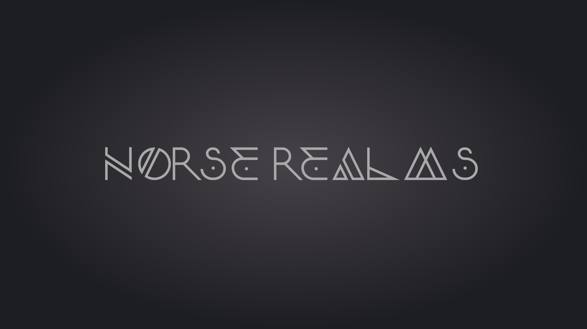

Norse Realms

For the 48-hour game jam Norse Realms, adhering to the theme "Every action does multiple things," I introduced a dualistic gameplay experience through two distinct characters:
Axeman
- Shoots slow but powerful projectiles with a unique weapon passive — a circle of spinning axes.
- Character passive builds up a shield.
- Left Shift triggers a low-range dash and marks a spot to teleport back to.
Archer
- Shoots fast projectiles with a weapon passive that unleashes a potent arrow penetrating enemies.
- Character passive grants increased movement speed.
- Left Shift executes a long-range dash, conjuring a temporary black hole that pulls in enemies.
Each character is associated with a universe. When a character exhausts their ammunition, the player seamlessly transitions to the other universe — adding strategic depth aligned with the jam theme.